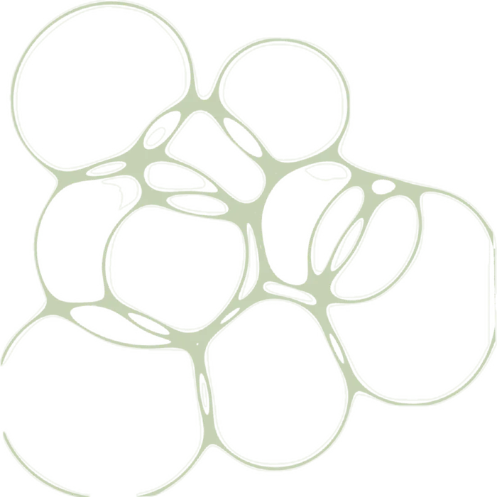

Exames e doenças explicados em palavras simples
O Saudezen traduz o seu hemograma com ajuda de inteligência artificial e explica as doenças mais comuns, sem termos difíceis.
Não substitui o médico. Leia o aviso.
Como está no exameReferência
É a parte do sangue que carrega o oxigênio. O valor está dentro da referência.

O Saudezen explica. Quem diagnostica é o médico.
Use o site para entender melhor e levar perguntas para a consulta. Se algo estiver fora da referência, ou se você não se sentir bem, procure um profissional de saúde.
Emergência: ligue 192 (SAMU)
Notícias de saúde
O que saiu de importante na saúde e o que isso muda para você. Resumos de matérias da Agência Brasil.
1 de 5
Os resumos e as dicas foram escritos pela equipe do Saudezen. O texto completo e os direitos de cada matéria são da Agência Brasil.
Doenças de A a Z
Mais de 120 doenças comuns no Brasil, explicadas em palavras simples a partir de fontes oficiais, como o Ministério da Saúde. Dá para procurar pelo nome ou pela primeira letra.
Ver as doenças de A a ZEm cada doença, você encontra
-
O que é e como se pega
-
Os sinais mais comuns
-
Como se prevenir e se cuidar
-
Quando procurar ajuda médica